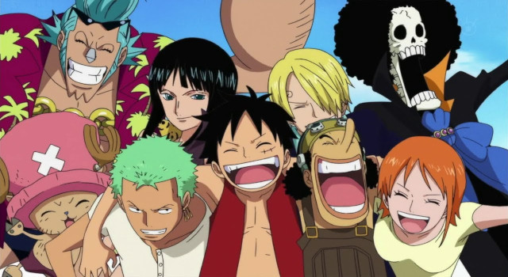
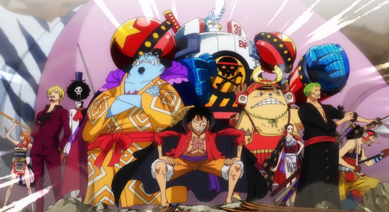

História
A Jolly Roger da tripulação é uma representação cartunizada de um crânio tradicional e ossos cruzados, com o crânio usando um Chapéu de Palha, a marca registrada de Luffy. Devido às habilidades mórbidas de Luffy, Usopp foi quem desenhou a bandeira. Além de estar em sua bandeira, a Jolly Roger também foi mostrada nas velas do Going Merry e do Thousand Sunny.
Os Piratas do Chapéu de Palha, também conhecidos como a Tripulação do Chapéu de Palha ou simplesmente Chapéus de Palha, são uma tripulação pirata ascendente e infame que se originou do East Blue, mas que possui vários membros de locais diferentes, seus tripulantes são (Roronoa Zoro, Usopp, Sanji, Nami, Tony Tony Chopper, Nico Robin, Franky, Brook e Jinbe). Eles são o principal foco e protagonistas do mangá e anime One Piece, e são liderados pelos protagonistas principais, Monkey D. Luffy.
Os "Chapéus de Palha" foram nomeados assim devido a assinatura de Luffy, seu chapéu, que foi dado a ele por Shanks, o Ruivo. Eles foram referidos assim pela primeira vez por Smoker em Alabasta. A tripulação navegou no Going Merry, o primeiro navio oficial dos Chapéus de Palha, até o Arco Water 7. Durante o Arco Pós-Enies Lobby, Franky e Iceburg construíram um novo navio que foi chamado de Thousand Sunny por Iceberg, embora os membros lutassem por nomes diferentes. Os Chapéus de Palha atualmente consistem em dez membros cujas recompensas combinadas são iguais 3.161,000,100.
Na sequência dos eventos no Arquipélago de Sabaody, todos os nove membros foram separados um do outro. Por dois anos, eles treinaram em locais relativamente isolados, tornando-se mais fortes para ajudar uns aos outros. Eles então se reuniram e, desde então, têm se tornado uma força ativa e massiva no Novo Mundo, derrotando o homem mais importante no Submundo e removendo-o do poder, tendo uma enorme e poderosa frota pirata se formando para servir sob eles e adicionando o ex-Shichibukai Jinbe à sua tripulação. Eles até conseguiram levar uma das armas vivas da Yonkou Big Mom, Zeus, para sua tripulação, como servo voluntário de Nami.